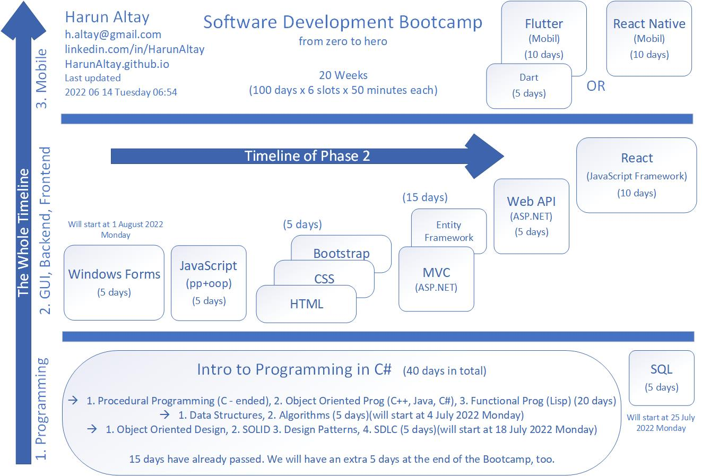

last updated 2022 06 06 Monday 05:04
please see below of this page for the subject list for Procedural Programming part.

Procedural Programming Part - lets say SYLLABUS
console read write (continue)
data types
operators
if, if-else, if-elseif-else, switch
do-while, while, for, foreach
arrays
structs
collections
functions
recursion
in appropriate places:
debug
try-catch
file io
etc